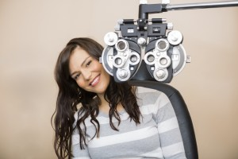

<?xml version="1.0" encoding="UTF-8"?><rss version="2.0"
	xmlns:content="http://purl.org/rss/1.0/modules/content/"
	xmlns:wfw="http://wellformedweb.org/CommentAPI/"
	xmlns:dc="http://purl.org/dc/elements/1.1/"
	xmlns:atom="http://www.w3.org/2005/Atom"
	xmlns:sy="http://purl.org/rss/1.0/modules/syndication/"
	xmlns:slash="http://purl.org/rss/1.0/modules/slash/"
	>

<channel>
	<title>comprehensive eye exam &#8211; Optometrist in Annapolis</title>
	<atom:link href="http://annapolis.eyefitvisioncenters.com/eyeglasses/Maryland/comprehensive-eye-exam/feed/" rel="self" type="application/rss+xml" />
	<link>http://annapolis.eyefitvisioncenters.com/eyeglasses</link>
	<description>eye doctor &#124; eye exam &#124; eyeglasses frames</description>
	<lastBuildDate>Fri, 25 Mar 2016 18:25:12 +0000</lastBuildDate>
	<language>en-US</language>
	<sy:updatePeriod>hourly</sy:updatePeriod>
	<sy:updateFrequency>1</sy:updateFrequency>
	
	<item>
		<title>Eye exam in Annapolis</title>
		<link>http://annapolis.eyefitvisioncenters.com/eyeglasses/eye-exam-in-annapolis/</link>
		<pubDate>Mon, 16 Nov 2015 15:13:53 +0000</pubDate>
		<dc:creator><![CDATA[pjdhanoa]]></dc:creator>
				<category><![CDATA[Annapolis]]></category>
		<category><![CDATA[Eye Doctor]]></category>
		<category><![CDATA[21401 Eye Exam]]></category>
		<category><![CDATA[Annapolis Eye Exam]]></category>
		<category><![CDATA[comprehensive eye exam]]></category>

		<guid isPermaLink="false">http://annapolis.eyefitvisioncenters.com/eyeglasses/?p=52</guid>
		<description><![CDATA[Annapolis eye testing Are you thinking about getting contact lenses for the first time? Or do you already wear contacts but know that it is time that you had a new comprehensive contact lens fitting and eye exam? When you need a contact lens eye exam in Annapolis, you will do well to come to [&#8230;]]]></description>
				<content:encoded><![CDATA[<h2><a href="../../../../index.html">Annapolis eye testing</a></h2>
<div id="attachment_53" style="width: 310px" class="wp-caption alignleft"><a href="../../../wp-content/uploads/2015/11/1-2.jpg"></a><p class="wp-caption-text">Eye exam in Annapolis</p></div>
<p style="text-align: justify;">Are you thinking about getting contact lenses for the first time? Or do you already wear contacts but know that it is time that you had a new comprehensive contact lens fitting and eye exam? When you need a contact lens <a href="../../../../index.html">eye exam in Annapolis</a>, you will do well to come to our practice, EyeFit Vision Centers, for excellent eye care.</p>
<p style="text-align: justify;">At our practice you will be able to have a great contact lens exam and fitting by our expert and highly-skilled optometrist, Dr. Linda Marie Chous. During a contact lens <a href="../../../../index.html">eye exam in Annapolis</a> the health of your eyes will be checked. Then measurements will be taken of your eyes to make sure that the new contact lenses will fit you perfectly. Based on the results of your eye exam our optometrist will be able to write you a contact lens prescription that not only gives information about the contact lens curvature and size, but it will also have information about the needed refractive correction. After the exam is completed our optometrist will also be able to discuss with you the types and brands of lenses that will work best for you. You will also be able to order your new contact lenses directly from our practice.</p>
<p style="text-align: justify;">At our practice, we offer a wide selection of contact lens brands to choose from. After your <a href="../../../../index.html">eye exam in Annapolis</a> our optometrist will help you choose the correct brand that will offer you the best vision correction and the greatest comfort. Included in our list of brands are: Acuvue 1-Day Moist; Acuvue 1-Day Trueye; Acuvue 2; Acuvue 2 Enhancer Color; Acuvue Advance for Astigmatism; Acuvue Advance Plus; Acuvue Bifocal; Acuvue Oasys; Acuvue Oasys for Astigmatism; Acuvue Oasys for Presbyopia; Air Optix Aqua; Air Optix Aqua Multifocal; Air Optix for Astigmatism; Air Optix Night &amp; Day; Avaira.; Biofinity; Biofinity Toric; Biomedics 55; Biomedics Toric; Biomedics XC; Focus Dailies Aqua Release; Focus Dailies Toric; Frequency 55 Aspheric; Frequency 55 Toric; Freshlook Color Blends; Proclear; Proclear Multifocal; Purevision; Purevision 2 HD; Purevision Multifocal; Purevision Toric; Soflens 38; Soflens 66 Toric; and Soflens Multifocal. If you would like to meet with our optometrist for a contact lens exam in Annapolis, contact us for an appointment.</p>
<h3 style="text-align: justify;"><a href="../../../../index.html">EyeFit Vision Centers</a><br />
2321 Forest Drive<br />
Annapolis, MD 21401<br />
Phone:(410) 266-3369</h3>
]]></content:encoded>
			</item>
		<item>
		<title>Annapolis Eyeglass Lenses</title>
		<link>http://annapolis.eyefitvisioncenters.com/eyeglasses/annapolis-eyeglass-lenses/</link>
		<pubDate>Thu, 30 Jul 2015 16:57:01 +0000</pubDate>
		<dc:creator><![CDATA[pjdhanoa]]></dc:creator>
				<category><![CDATA[Annapolis]]></category>
		<category><![CDATA[annapolis]]></category>
		<category><![CDATA[comprehensive eye exam]]></category>
		<category><![CDATA[contact lenses]]></category>
		<category><![CDATA[eyeglass lenses]]></category>
		<category><![CDATA[optometric service]]></category>
		<category><![CDATA[prescription eyeglasses]]></category>

		<guid isPermaLink="false">http://annapolis.eyefitvisioncenters.com/eyeglasses/?p=32</guid>
		<description><![CDATA[Eyeglasses in Annapolis If you are in need of a comprehensive eye exam, or a new prescription for eyeglasses or contact lenses, you will want to visit EyeFit Vision Centers. There are 11 locations to choose from, and we offer fine optometric service at each of our locations. If you are in need of Annapolis [&#8230;]]]></description>
				<content:encoded><![CDATA[<h1 style="text-align: justify;"><a href="../../../../index.html">Eyeglasses in Annapolis</a></h1>
<div id="attachment_33" style="width: 310px" class="wp-caption alignleft"><a href="../../../wp-content/uploads/2015/07/9069862_xl.jpg"></a><p class="wp-caption-text">Annapolis eyeglass lenses</p></div>
<p style="text-align: justify;">If you are in need of a comprehensive eye exam, or a new prescription for eyeglasses or contact lenses, you will want to visit EyeFit Vision Centers. There are 11 locations to choose from, and we offer fine optometric service at each of our locations. If you are in need of <a href="../../../../index.html">Annapolis eyeglass lenses</a>, we offer not only eye exams by highly-qualified doctors, but also each location offers a wide selection of eyeglass frames to fit every budget and fashion need.</p>
<p style="text-align: justify;">It is important that you have a comprehensive eye exam on a regularly-scheduled basis. Many eye diseases, such as glaucoma, have no obvious symptoms during their early stages. However if not detected early, eye diseases may cause irreversible vision loss. During a comprehensive eye exam, not only will we determine your visual acuity, but we will also screen you for many eye diseases and conditions that may be at the initial period of affecting your eyesight. The prescription you get at the conclusion of the exam will be the prescription that will work best for your new Annapolis eyeglass lenses. Not only will you be thrilled with your new eyeglass frames, should you choose to purchase a set, you will also be thrilled with your fresh, clearer vision that you will get to enjoy every day.</p>
<p style="text-align: justify;">During a comprehensive eye exam, your eyes will be tested for diseases and conditions such as: glaucoma; diabetic retinopathy; macular degeneration; and cataracts. You may also have drops put in to dilate your eyes so that the back, retinal portion of your eye can be closely examined for any type of retinal problems. The corneal surface of your eye will also be examined for any types or corneal irregularities. If you need a contact lens prescription, you will have tests to measure the curvature of your cornea and the size of your iris. You may also be examined for dry eye. Once you have had your complete eye exam, you will be able to get new <a href="../../../../index.html">Annapolis eyeglass lenses</a>, or contact lenses, knowing that you now have the best up-to-date prescription to fit your vision needs. So whenever you think of eye exams or eyeglass and contact lens prescriptions, we hope your will think of EyeFit Vision Centers.</p>
<h3 style="text-align: justify;"><a href="../../../../index.html">2321 Forest Drive</a><br />
<a href="../../../../index.html">Annapolis, MD 21401</a><br />
<a href="../../../../index.html">Phone:(410) 266-3369</a></h3>
]]></content:encoded>
			</item>
	</channel>
</rss>

<!-- Dynamic page generated in 0.235 seconds. -->
<!-- Cached page generated by WP-Super-Cache on 2016-04-09 16:35:58 -->

<!-- Localized -->